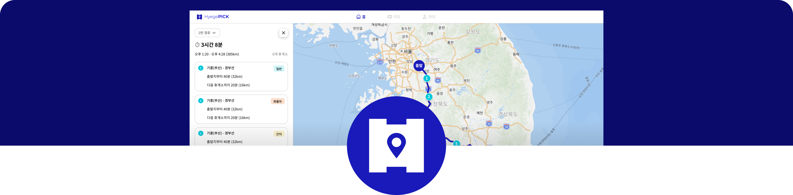

장거리 운전 시 꼭 알아야 할 휴게소 활용법
고속도로 휴게소를 효율적으로 활용하는 방법과 숨겨진 편의시설들을 소개합니다. 안전하고 즐거운 여행을 위한 필수 가이드입니다.
일상을 더 편리하게 만드는 정보와 팁을 공유합니다

고속도로 휴게소를 효율적으로 활용하는 방법과 숨겨진 편의시설들을 소개합니다. 안전하고 즐거운 여행을 위한 필수 가이드입니다.
임신 시기별 적정 체중 증가량과 건강한 식단 관리법을 알아보세요. 엄마와 아기 모두 건강한 임신을 위한 체중 관리 팁입니다.

추운 겨울, 안전한 운전을 위해 미리 준비해야 할 것들과 위험 상황 대처법을 정리했습니다.

임신 초기 태아 발달에 중요한 영양소들과 이를 충분히 섭취할 수 있는 음식들을 소개합니다.

AI와 앱을 활용해 일상의 작은 불편함을 해결하는 방법들을 소개합니다. 기술이 어렵다고 느끼는 분들도 쉽게 따라할 수 있어요.

고속도로 이용할 때 꼭 들러야 할 휴게소 맛집들을 엄선했습니다. 지역별 특색 메뉴와 추천 이유를 자세히 알려드려요.